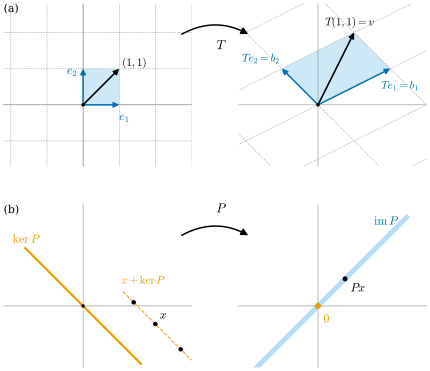

1.2 선형사상과 행렬
이 절의 목표
- 선형사상의 정의를 확인하고, 선형사상이 기저에서의 값만으로 결정됨을 안다.
- 핵과 상을 계산하고, 차원 정리 \(\dim V = \dim\ker T + \rank T\)를 증명할 수 있다.
- 두 기저에 대한 선형사상의 행렬을 구하고, 사상의 합성이 행렬의 곱이 되는 이유를 설명할 수 있다.
- 행렬 성분을 \(A^i_j\)(위는 행, 아래는 열)로 적는 규약을 안다.
선수 지식
동기
1.1절에서 벡터공간과 그 좌표(기저)를 정했다. 이제 벡터공간 사이의 사상을 보자. 벡터공간에서 쓸 수 있는 연산은 덧셈과 스칼라곱뿐이므로, 그 둘을 보존하는 사상이 가장 자연스럽다. 이런 사상을 선형사상이라 한다.
미분기하에서 선형사상이 중요한 이유는 미분이 바로 선형사상이기 때문이다. 미적분학에서 \(f(a + h) \approx f(a) + f'(a)\,h\)였다. 이 근사에서 증분 \(h\)를 \(f'(a)\,h\)로 보내는 부분 \(h \mapsto f'(a)\,h\)가 선형사상이다. 여러 변수 함수에서도 같은 생각이 통해서, 사상 \(F\colon \R^n \to \R^m\)의 한 점에서의 미분은 \(\R^n\)에서 \(\R^m\)으로 가는 선형사상이 된다(2장). 그래서 “사상의 미분을 계산한다”는 말은 결국 “선형사상을 행렬로 적는다”는 말이 된다. 이 절은 그 준비다.

선형사상
정의 1.2.1 (선형사상, linear map). \(V\)와 \(W\)가 벡터공간이라 하자. 사상 \(T\colon V \to W\)가 모든 \(v, w \in V\)와 \(a \in \R\)에 대하여 \[ T(v + w) = T(v) + T(w), \qquad T(av) = a\,T(v) \] 를 만족하면 선형사상(linear map)이라 한다. \(V\)에서 \(W\)로 가는 선형사상 전체의 집합을 \(\Hom(V, W)\)로 쓰고, \(\End(V) = \Hom(V, V)\)로 쓴다.
괄호를 줄여 \(T(v)\)를 \(Tv\)로도 쓴다. 두 조건을 합치면 \(T\)는 일차결합을 일차결합으로 보낸다: \(T\big(\sum_i a^i v_i\big) = \sum_i a^i\, Tv_i\)이다. 특히 \(T0 = T(0 \cdot 0) = 0 \cdot T0 = 0\)이다(1.1절의 \(0v = 0\)). \(\Hom(V, W)\)는 \((S + T)v = Sv + Tv\), \((aT)v = a(Tv)\)로 정한 연산으로 다시 벡터공간이 된다(여덟 조건은 \(W\)의 조건에서 따라 나온다).
예 1.2.2. (a) \(m \times n\) 행렬 \(A\)에 대하여 \(x \mapsto Ax\)는 \(\R^n\)에서 \(\R^m\)으로 가는 선형사상이다. 행렬곱의 분배법칙 \(A(x + y) = Ax + Ay\)와 \(A(ax) = a(Ax)\) 때문이다.
(b) \(d \ge 1\)일 때 미분 \(D\colon P_d \to P_{d-1}\), \(Dp = p'\)은 선형사상이다. \((p + q)' = p' + q'\)이고 \((ap)' = ap'\)이다.
(c) 한 점 \(a\)에서의 값 \(C^\infty(\R) \to \R\), \(f \mapsto f(a)\)는 선형사상이다. \((f + h)(a) = f(a) + h(a)\)이기 때문이다. 값이 \(\R\)인 이런 선형사상은 1.3절의 주인공이 된다.
(d) 영사상 \(v \mapsto 0\)과 항등사상 \(\id_V\colon v \mapsto v\)는 선형사상이다.
(e) 평면에서 원점을 중심으로 각 \(\alpha\)만큼 돌리는 회전 \(R_\alpha\)는 선형사상이다. 평행사변형을 돌리면 평행사변형이 되므로 합을 보존하고, 화살표를 늘인 뒤 돌리나 돌린 뒤 늘이나 같으므로 스칼라곱을 보존한다. 식으로는 \(R_\alpha(x^1, x^2) = (x^1\cos\alpha - x^2\sin\alpha,\ x^1\sin\alpha + x^2\cos\alpha)\)이고, 이것은 (a)의 꼴이다.
비예 1.2.3. (a) \(c \neq 0\)일 때 평행이동 \(v \mapsto v + c\)는 선형사상이 아니다. \(0\)을 \(c \neq 0\)으로 보내기 때문이다. 그래서 “원점을 지나지 않는 직선” \(y = mx + c\)를 그리는 함수는 미적분학에서는 “일차함수”라 불러도 선형사상은 아니다.
(b) \(f(x) = x^2\)(\(\R \to \R\))은 선형사상이 아니다. \(f(1 + 1) = 4 \neq 2 = f(1) + f(1)\)이다.
(c) 노름 \(x \mapsto \sqrt{(x^1)^2 + (x^2)^2}\)(\(\R^2 \to \R\))는 선형사상이 아니다. \(x = (1, 0)\)을 \(-1\)배하면 값이 \(1\)에서 \(-1\)로 가야 하는데 실제 값은 \(1\) 그대로다. 합을 보존하는 조건도 어긴다: \((1,0) + (0,1)\)의 값은 \(\sqrt2 \neq 1 + 1\)이다.
선형사상은 기저에서의 값만 알면 전부 알 수 있고, 거꾸로 기저에서의 값은 마음대로 정할 수 있다. 이 사실이 행렬 표현(정의 1.2.13)과 쌍대기저(1.3절)의 출발점이다.
명제 1.2.4 (선형사상은 기저에서의 값으로 결정된다). \((b_1, \dots, b_n)\)이 \(V\)의 기저이고 \(w_1, \dots, w_n\)이 \(W\)의 임의의 벡터라 하자. 그러면 모든 \(j\)에 대하여 \(Tb_j = w_j\)인 선형사상 \(T\colon V \to W\)가 꼭 하나 있다. 그것은 \[ T\Big(\sum_{j=1}^{n} v^j b_j\Big) = \sum_{j=1}^{n} v^j w_j \] 로 주어진다.
증명 아이디어: 선형이라면 위 식일 수밖에 없다(유일성). 거꾸로 위 식으로 정의하면 선형이다(존재).
증명. 유일성. \(T\)가 선형이고 \(Tb_j = w_j\)이면, 임의의 \(v = \sum_j v^j b_j\)에 대하여 \(Tv = \sum_j v^j Tb_j = \sum_j v^j w_j\)이다. 따라서 \(T\)의 값은 모든 점에서 정해져 있다.
존재. 정리 1.1.13에 의해 각 \(v\)의 성분 \(v^j\)가 하나씩 정해지므로, 위 식은 사상 \(T\colon V \to W\)를 잘 정의한다. \(v = \sum_j v^j b_j\), \(u = \sum_j u^j b_j\)이면 \(v + u = \sum_j (v^j + u^j) b_j\)이므로 \(v + u\)의 성분은 \(v^j + u^j\)이다. 따라서 \(T(v + u) = \sum_j (v^j + u^j) w_j = Tv + Tu\)이다. 같은 방법으로 \(T(av) = \sum_j (av^j) w_j = a\,Tv\)이다. 또 \(b_j\)의 성분은 \(j\)번째만 \(1\)이고 나머지는 \(0\)이므로 \(Tb_j = w_j\)이다.
핵, 상, 차원 정리
정의 1.2.5 (핵과 상, kernel and image). 선형사상 \(T\colon V \to W\)에 대하여 \[ \ker T = \{v \in V : Tv = 0\}, \qquad \im T = \{Tv : v \in V\} \] 를 각각 \(T\)의 핵(kernel)과 상(image)이라 한다.
\(\ker T\)는 \(V\)의 부분공간이고 \(\im T\)는 \(W\)의 부분공간이다. \(\ker T\)에 대해 확인하면, \(T0 = 0\)이므로 \(0 \in \ker T\)이고, \(Tv = Tu = 0\)이면 \(T(v + u) = 0 + 0 = 0\), \(T(av) = a0 = 0\)이다. \(\im T\)에 대해서는 \(0 = T0\), \(Tv + Tu = T(v + u)\), \(a\,Tv = T(av)\)이다.
명제 1.2.6. 선형사상 \(T\)가 단사일 필요충분조건은 \(\ker T = \{0\}\)이다.
증명. \(T\)가 단사이고 \(Tv = 0 = T0\)이면 \(v = 0\)이다. 거꾸로 \(\ker T = \{0\}\)이고 \(Tv = Tu\)이면 \(T(v - u) = Tv - Tu = 0\)이므로 \(v - u \in \ker T\), 즉 \(v = u\)이다.
예 1.2.7. (a) \(P\colon \R^2 \to \R^2\), \(P(x^1, x^2) = \big(\tfrac12(x^1 + x^2),\ \tfrac12(x^1 + x^2)\big)\)라 하자(그림 1.2.1(b)). \(Px = 0\)일 필요충분조건은 \(x^1 + x^2 = 0\)이므로 \(\ker P = \{(t, -t) : t \in \R\} = \Span((1,-1))\)이다. \(Px\)는 늘 두 성분이 같은 벡터이고, 거꾸로 \((s, s) = P(s, s)\)이므로 \(\im P = \Span((1,1))\)이다. \(P\)는 단사가 아니다. 실제로 \(x\)와 \(x + t(1,-1)\)은 모두 같은 점으로 간다.
(b) \(D\colon P_d \to P_{d-1}\)(\(d \ge 1\))에서 \(Dp = 0\)인 다항식은 상수뿐이므로 \(\ker D = P_0\)(상수 다항식)이다. 또 \(q = c_0 + c_1 t + \dots + c_{d-1}t^{d-1}\)은 \(p = c_0 t + \tfrac{c_1}{2} t^2 + \dots + \tfrac{c_{d-1}}{d} t^d\)의 미분이므로 \(\im D = P_{d-1}\)이다.
두 예에서 \(\dim \ker + \dim \im\)을 세어 보면 (a)는 \(1 + 1 = 2 = \dim \R^2\), (b)는 \(1 + d = d + 1 = \dim P_d\)이다. 이것은 우연이 아니다.
정리 1.2.8 (차원 정리, rank–nullity theorem). \(V\)가 유한차원이고 \(T\colon V \to W\)가 선형사상이면 \(\im T\)는 유한차원이고 \[ \dim V = \dim\ker T + \dim\im T \] 이다.
이 정리가 말하는 것. \(V\)의 차원은 “\(T\)가 뭉개 버리는 차원”(\(\ker T\))과 “\(T\)가 살려서 보내는 차원”(\(\im T\))으로 정확히 나뉜다.
증명 아이디어: \(\ker T\)의 기저를 \(V\)의 기저로 확장한다. 새로 덧붙인 벡터들의 상이 \(\im T\)의 기저가 된다.
증명. \(\ker T\)는 \(V\)의 부분공간이므로 따름정리 1.1.21(c)에 의해 유한차원이다. 그 기저 \((k_1, \dots, k_m)\)을 골라 정리 1.1.18(b)로 \(V\)의 기저 \((k_1, \dots, k_m, v_1, \dots, v_r)\)로 확장한다. 그러면 \(\dim V = m + r\)이다. \((Tv_1, \dots, Tv_r)\)이 \(\im T\)의 기저임을 보이면 \(\dim\im T = r = \dim V - \dim\ker T\)가 되어 끝난다.
생성. \(w \in \im T\)이면 \(w = Tv\)인 \(v\)가 있고, \(v = \sum_i a^i k_i + \sum_j c^j v_j\)로 쓸 수 있다. \(Tk_i = 0\)이므로 \(w = \sum_j c^j\, Tv_j\)이다.
일차독립. \(\sum_j c^j\, Tv_j = 0\)이라 하자. 그러면 \(T\big(\sum_j c^j v_j\big) = 0\)이므로 \(\sum_j c^j v_j \in \ker T\)이고, \(\sum_j c^j v_j = \sum_i a^i k_i\)인 \(a^i\)가 있다. 이 식을 \(\sum_j c^j v_j - \sum_i a^i k_i = 0\)으로 옮기면, \((k_1, \dots, k_m, v_1, \dots, v_r)\)이 일차독립이므로 모든 \(c^j\)(와 \(a^i\))가 \(0\)이다.
정의 1.2.9 (계수, rank). 선형사상 \(T\)의 상의 차원 \(\dim\im T\)를 \(T\)의 계수(rank)라 하고 \(\rank T\)로 쓴다. 행렬 \(A\)의 계수 \(\rank A\)는 선형사상 \(x \mapsto Ax\)의 계수, 즉 \(A\)의 열들이 생성하는 부분공간의 차원이다.
따름정리 1.2.10. \(V, W\)가 유한차원이고 \(T\colon V \to W\)가 선형사상이라 하자.
- (a) \(\dim V = \dim W\)이면 \(T\)가 단사, 전사, 전단사라는 세 조건은 서로 동치다.
- (b) \(\dim V \gt \dim W\)이면 \(T\)는 단사가 아니다.
- (c) \(\dim V \lt \dim W\)이면 \(T\)는 전사가 아니다.
증명. (a) \(n = \dim V = \dim W\)라 하자. 명제 1.2.6과 정리 1.2.8에 의해 \(T\)가 단사 \(\iff \dim\ker T = 0 \iff \rank T = n \iff \im T = W\)이다. 마지막 동치는 따름정리 1.1.21(c)이다. 따라서 단사와 전사가 동치이고, 둘 중 하나가 성립하면 둘 다 성립하므로 전단사다. (b) \(\dim\ker T = \dim V - \rank T \ge \dim V - \dim W \gt 0\)이다. 여기서 \(\rank T \le \dim W\)는 따름정리 1.1.21(c)이다. (c) \(\rank T = \dim V - \dim\ker T \le \dim V \lt \dim W\)이므로 \(\im T \neq W\)이다.
동형사상과 좌표사상
정의 1.2.11 (동형사상, isomorphism). 전단사인 선형사상을 동형사상(isomorphism)이라 한다. \(V\)에서 \(W\)로 가는 동형사상이 있으면 \(V\)와 \(W\)가 동형이라 하고 \(V \cong W\)로 쓴다.
1장에서 기호 \(\cong\)는 늘 이 뜻, 즉 선형 동형(동형사상이 있다)이다. 같은 기호를 3장에서는 위상동형에 쓴다.
명제 1.2.12 (역사상과 좌표사상).
- (a) 동형사상 \(T\colon V \to W\)의 역사상 \(T^{-1}\colon W \to V\)도 선형사상이다.
- (b) \(\mathcal{B} = (b_1, \dots, b_n)\)이 \(V\)의 기저이면 \(\Phi_{\mathcal{B}}\colon \R^n \to V\), \(\Phi_{\mathcal{B}}(a^1, \dots, a^n) = \sum_i a^i b_i\)는 동형사상이고, 그 역사상은 \(v \mapsto [v]_{\mathcal{B}}\)이다. 특히 \(n\)차원 벡터공간은 모두 \(\R^n\)과 동형이다.
증명. (a) \(S = T^{-1}\)이라 하자. \(w, w' \in W\)이면 \(T(Sw + Sw') = TSw + TSw' = w + w'\)이다(\(T\)의 선형성). 양변에 \(S\)를 적용하면 \(Sw + Sw' = S(w + w')\)이다. 마찬가지로 \(T(a\,Sw) = a\,TSw = aw\)에서 \(a\,Sw = S(aw)\)이다.
(b) \(\Phi_{\mathcal{B}}\)가 선형인 것은 \(\sum_i (a^i + c^i) b_i = \sum_i a^i b_i + \sum_i c^i b_i\)와 \(\sum_i (ca^i) b_i = c\sum_i a^i b_i\) 때문이다. 정리 1.1.13에 의해 모든 \(v\)는 \(\sum_i a^i b_i\) 꼴로 꼭 한 가지 방식으로 쓰이므로 \(\Phi_{\mathcal{B}}\)는 전단사이고, \(v\)로 가는 유일한 \((a^i)\)가 성분 \([v]_{\mathcal{B}}\)이다.
기저에 대한 행렬
유한차원 벡터공간 사이의 선형사상은 두 기저를 고르면 수의 표, 즉 행렬로 적을 수 있다. 명제 1.2.4에 의해 \(T\)는 기저벡터들의 상 \(Tb_1, \dots, Tb_n\)으로 결정되고, 각 \(Tb_j\)는 다시 \(W\)의 기저에 대한 성분으로 결정되기 때문이다.
정의 1.2.13 (선형사상의 행렬, matrix of a linear map). \(T\colon V \to W\)가 선형사상이고 \(\mathcal{B} = (b_1, \dots, b_n)\)이 \(V\)의 기저, \(\mathcal{C} = (c_1, \dots, c_m)\)이 \(W\)의 기저라 하자. 각 \(j\)에 대하여 \(Tb_j\)를 \(\mathcal{C}\)로 전개한 성분을 \(A^1_j, \dots, A^m_j\)라 하자. 즉
이다. \(i\)행 \(j\)열의 성분이 \(A^i_j\)인 \(m \times n\) 행렬을 기저 \(\mathcal{B}, \mathcal{C}\)에 대한 \(T\)의 행렬 표현(matrix representation) 또는 간단히 \(T\)의 행렬이라 하고 \([T]^{\mathcal{C}}_{\mathcal{B}}\)로 쓴다. \(V = W\)이고 \(\mathcal{C} = \mathcal{B}\)이면 \([T]_{\mathcal{B}}\)로 줄여 쓴다.
말로 하면 \([T]^{\mathcal{C}}_{\mathcal{B}}\)의 \(j\)번째 열은 \(Tb_j\)의 \(\mathcal{C}\)-성분 \([Tb_j]_{\mathcal{C}}\)이다. 성분의 첨자 위치에도 뜻이 있다. 위 첨자 \(i\)는 행 번호이자 도착 공간 \(W\)의 성분 번호이고, 아래 첨자 \(j\)는 열 번호이자 출발 공간 \(V\)의 기저 번호다. 기호 \([T]^{\mathcal{C}}_{\mathcal{B}}\)에서도 도착 쪽 기저를 위에, 출발 쪽 기저를 아래에 적었다. (Part 0과 Part I에서는 익숙한 \(a_{ij}\)도 함께 쓴다. \(a_{ij}\)와 \(A^i_j\)는 모두 \(i\)행 \(j\)열 성분이다.)
명제 1.2.14. 정의 1.2.13의 상황에서 모든 \(v \in V\)에 대하여 \([Tv]_{\mathcal{C}} = [T]^{\mathcal{C}}_{\mathcal{B}}\,[v]_{\mathcal{B}}\)이다. 성분으로 쓰면
이다. 여기서 \((Tv)^i\)는 \(Tv\)의 \(\mathcal{C}\)-성분, \(v^j\)는 \(v\)의 \(\mathcal{B}\)-성분이다.
증명. \(v = \sum_j v^j b_j\)이므로 선형성과 (1.2.1)에서 \[ Tv = \sum_{j=1}^{n} v^j\, Tb_j = \sum_{j=1}^{n} v^j \sum_{i=1}^{m} A^i_j\, c_i = \sum_{i=1}^{m} \Big(\sum_{j=1}^{n} A^i_j v^j\Big) c_i \] 이다. 마지막 등호는 유한합의 순서를 바꾼 것이다. 정리 1.1.13에 의해 \(Tv\)의 \(\mathcal{C}\)-성분은 이 표현의 계수뿐이므로 (1.2.2)가 성립한다. (1.2.2)의 우변은 행렬 \([T]^{\mathcal{C}}_{\mathcal{B}}\)의 \(i\)번째 행과 열벡터 \([v]_{\mathcal{B}}\)의 곱이다.
예 1.2.15 (미분의 행렬). \(D\colon P_2 \to P_1\), \(Dp = p'\)의 행렬을 기저 \(\mathcal{B} = (1, t, t^2)\), \(\mathcal{C} = (1, t)\)에 대하여 구하자. 기저벡터의 상을 \(\mathcal{C}\)로 전개하면
이다. 이 계수들을 열로 세우면 \[ [D]^{\mathcal{C}}_{\mathcal{B}} = \begin{pmatrix} 0 & 1 & 0 \\ 0 & 0 & 2 \end{pmatrix} \] 이다. 확인해 보자. \(p = 3 - t + 5t^2\)이면 \([p]_{\mathcal{B}} = (3, -1, 5)^{\mathsf{T}}\)이고 \[ [D]^{\mathcal{C}}_{\mathcal{B}}\,[p]_{\mathcal{B}} = \begin{pmatrix} 0 \cdot 3 + 1 \cdot (-1) + 0 \cdot 5 \\ 0 \cdot 3 + 0 \cdot (-1) + 2 \cdot 5 \end{pmatrix} = \begin{pmatrix} -1 \\ 10 \end{pmatrix} \] 이다. 실제로 \(p' = -1 + 10t\)이다. \(\rank D = 2\)(두 열 \((1,0)^{\mathsf{T}}, (0,2)^{\mathsf{T}}\)가 일차독립), \(\dim\ker D = 1\)이고 \(1 + 2 = 3 = \dim P_2\)로 정리 1.2.8과 맞는다.
검증: verify/v-1-2-linear-maps.py
행렬의 곱을 왜 “행과 열을 곱해 더하는” 이상한 방식으로 정의하는지, 다음 정리가 답한다. 사상의 합성이 그 방식을 요구한다.
정리 1.2.16 (합성과 행렬곱). \(T\colon V \to W\)와 \(S\colon W \to U\)가 선형사상이고 \(\mathcal{B}, \mathcal{C}, \mathcal{D}\)가 각각 \(V, W, U\)의 기저라 하자. 그러면 \(S \circ T\)는 선형사상이고
이다.
이 정리가 말하는 것. 먼저 \(T\)를, 다음에 \(S\)를 하는 것은 행렬로는 \([T]\) 왼쪽에 \([S]\)를 곱하는 것이다. 가운데 기저 \(\mathcal{C}\)가 “맞물려” 사라진다.
증명 아이디어: 행렬의 \(j\)번째 열은 \(b_j\)의 상의 성분이다. \(b_j\)를 \(T\)로 보내 \(\mathcal{C}\)로 전개하고, 다시 \(S\)로 보내 \(\mathcal{D}\)로 전개한 뒤 계수를 모은다.
증명. \((S \circ T)(v + w) = S(Tv + Tw) = STv + STw\)이고 \((S \circ T)(av) = S(a\,Tv) = a\,STv\)이므로 \(S \circ T\)는 선형이다. 기저를 \(\mathcal{B} = (b_j)\), \(\mathcal{C} = (c_k)\), \(\mathcal{D} = (d_i)\)라 하고, \([T]^{\mathcal{C}}_{\mathcal{B}}\)의 성분을 \(T^k_j\), \([S]^{\mathcal{D}}_{\mathcal{C}}\)의 성분을 \(S^i_k\)라 하자. 즉 \(Tb_j = \sum_k T^k_j c_k\), \(Sc_k = \sum_i S^i_k d_i\)이다. 그러면 \[ (S \circ T) b_j = S\Big(\sum_k T^k_j c_k\Big) = \sum_k T^k_j\, Sc_k = \sum_k T^k_j \sum_i S^i_k d_i = \sum_i \Big(\sum_k S^i_k T^k_j\Big) d_i \] 이다. 따라서 \([S \circ T]^{\mathcal{D}}_{\mathcal{B}}\)의 \(i\)행 \(j\)열 성분은 \(\sum_k S^i_k T^k_j\)이고, 이것은 행렬곱 \([S]^{\mathcal{D}}_{\mathcal{C}}\,[T]^{\mathcal{C}}_{\mathcal{B}}\)의 \(i\)행 \(j\)열 성분이다.
따름정리 1.2.17. \(\dim V = \dim W = n\)이고 \(\mathcal{B}, \mathcal{C}\)가 각각 \(V, W\)의 기저일 때, 선형사상 \(T\colon V \to W\)가 동형사상일 필요충분조건은 \([T]^{\mathcal{C}}_{\mathcal{B}}\)가 가역행렬인 것이다. 이때 \([T^{-1}]^{\mathcal{B}}_{\mathcal{C}} = \big([T]^{\mathcal{C}}_{\mathcal{B}}\big)^{-1}\)이다.
증명. 먼저 \([\id_V]_{\mathcal{B}} = I\)(단위행렬)이다. \(\id_V b_j = b_j\)의 성분은 \(j\)번째만 \(1\)이기 때문이다. \(T\)가 동형사상이면 \(T^{-1}\)은 선형사상(명제 1.2.12(a))이고, 정리 1.2.16에서 \([T^{-1}]^{\mathcal{B}}_{\mathcal{C}}[T]^{\mathcal{C}}_{\mathcal{B}} = [T^{-1} \circ T]_{\mathcal{B}} = I\), \([T]^{\mathcal{C}}_{\mathcal{B}}[T^{-1}]^{\mathcal{B}}_{\mathcal{C}} = [T \circ T^{-1}]_{\mathcal{C}} = I\)이다. 거꾸로 \(A = [T]^{\mathcal{C}}_{\mathcal{B}}\)가 가역이면, 명제 1.2.4로 \([S]^{\mathcal{B}}_{\mathcal{C}} = A^{-1}\)인 선형사상 \(S\colon W \to V\)를 만든다 (\(Sc_k = \sum_j (A^{-1})^j_k b_j\)로 정한다). 정리 1.2.16에서 \([S \circ T]_{\mathcal{B}} = A^{-1}A = I = [\id_V]_{\mathcal{B}}\)이고, 행렬이 같은 두 선형사상은 기저에서의 값이 같으므로(식 (1.2.1)) 명제 1.2.4의 유일성에 의해 같다. 즉 \(S \circ T = \id_V\)이고, 같은 방법으로 \(T \circ S = \id_W\)이다.
예 1.2.18 (기준 기저의 좌표사상). 예 1.1.15의 기준 기저 \(\mathcal{B} = (b_1, b_2)\), \(b_1 = (2,1)\), \(b_2 = (-1,1)\)의 좌표사상 \(\Phi_{\mathcal{B}}\colon \R^2 \to \R^2\), \(\Phi_{\mathcal{B}}(a) = a^1 b_1 + a^2 b_2\)의 행렬을 표준기저 \(\mathcal{E} = (e_1, e_2)\)에 대해 구하자. \(\Phi_{\mathcal{B}}(e_1) = b_1 = 2e_1 + e_2\), \(\Phi_{\mathcal{B}}(e_2) = b_2 = -e_1 + e_2\)이므로, 열이 \(b_1, b_2\)인
를 얻는다. 이것이 그림 1.2.1(a)의 \(T\)다. 역사상은 \(x \mapsto [x]_{\mathcal{B}}\)이고 식 (1.1.4)가 그 성분을 주므로 \[ B^{-1} = [\Phi_{\mathcal{B}}^{-1}]_{\mathcal{E}} = \frac13\begin{pmatrix} 1 & 1 \\ -1 & 2 \end{pmatrix} \] 이다. 확인: \(BB^{-1} = \frac13\begin{pmatrix} 2 \cdot 1 + (-1)(-1) & 2 \cdot 1 + (-1) \cdot 2 \\ 1 \cdot 1 + 1 \cdot (-1) & 1 \cdot 1 + 1 \cdot 2 \end{pmatrix} = \frac13\begin{pmatrix} 3 & 0 \\ 0 & 3 \end{pmatrix} = I\). 일반적으로 \(\R^n\)의 기저 \(\mathcal{B}\)에 대해, 열이 \(b_1, \dots, b_n\)인 행렬 \(B\)가 가역이고 \([x]_{\mathcal{B}} = B^{-1}x\)이다.
검증: verify/v-1-2-linear-maps.py
요약
- 선형사상은 덧셈과 스칼라곱을 보존하는 사상이고, 기저에서의 값으로 결정되며 그 값은 마음대로 정할 수 있다(명제 1.2.4).
- 핵과 상은 부분공간이고, \(\dim V = \dim\ker T + \rank T\)이다(정리 1.2.8). 같은 차원 사이에서는 단사, 전사, 전단사가 동치다.
- 기저 \(\mathcal{B}\)를 고르면 좌표사상 \(\Phi_{\mathcal{B}}\colon \R^n \to V\)가 동형사상이 된다. 하지만 그 동형은 기저에 의존한다.
- \([T]^{\mathcal{C}}_{\mathcal{B}}\)의 \(j\)번째 열은 \(Tb_j\)의 \(\mathcal{C}\)-성분이고, 성분은 \(A^i_j\)(위 = 행, 아래 = 열)로 쓴다. 성분으로는 \((Tv)^i = \sum_j A^i_j v^j\)이다.
- 합성은 행렬곱이 된다: \([S \circ T] = [S][T]\)(정리 1.2.16).
다음 절에서는 값이 \(\R\)인 선형사상, 즉 벡터를 받아 수를 내는 선형 함수들이 이루는 벡터공간(쌍대공간)을 다룬다. 기저를 하나 고르면 그 공간에 짝이 되는 기저가 저절로 생긴다.
연습문제
연습 1.2.1 ★ 다음 사상이 선형사상인지 판별하여라. (a) \(T(x, y) = (x + 2y,\ 3x)\) (b) \(T(x, y) = (x + 1,\ y)\) (c) \(T(x, y) = (xy,\ x)\) (d) \(C^\infty(\R) \to \R\), \(f \mapsto f(0) + f'(0)\)
풀이
(a) 선형이다. \(T(x,y) = \begin{pmatrix} 1 & 2 \\ 3 & 0 \end{pmatrix}\begin{pmatrix} x \\ y \end{pmatrix}\)이므로 예 1.2.2(a)의 꼴이다.
(b) 선형이 아니다. \(T(0,0) = (1, 0) \neq 0\)이다.
(c) 선형이 아니다. \(T(2 \cdot (1,1)) = T(2,2) = (4, 2)\)이지만 \(2\,T(1,1) = (2, 2)\)이다.
(d) 선형이다. \((f + h)(0) + (f + h)'(0) = (f(0) + f'(0)) + (h(0) + h'(0))\)이고, 상수배도 마찬가지다.
연습 1.2.2 ★ 회전 \(R_\alpha\)(예 1.2.2(e))의 표준기저에 대한 행렬을 쓰고, 정리 1.2.16을 이용해 \(R_\alpha \circ R_\beta = R_{\alpha + \beta}\)를 확인하여라.
풀이
\(R_\alpha e_1 = (\cos\alpha, \sin\alpha)\), \(R_\alpha e_2 = (-\sin\alpha, \cos\alpha)\)를 열로 세우면 \([R_\alpha] = \begin{pmatrix} \cos\alpha & -\sin\alpha \\ \sin\alpha & \cos\alpha \end{pmatrix}\)이다. 정리 1.2.16에서 \[ [R_\alpha][R_\beta] = \begin{pmatrix} \cos\alpha\cos\beta - \sin\alpha\sin\beta & -(\cos\alpha\sin\beta + \sin\alpha\cos\beta) \\ \sin\alpha\cos\beta + \cos\alpha\sin\beta & \cos\alpha\cos\beta - \sin\alpha\sin\beta \end{pmatrix} \] 이고, 삼각함수의 덧셈정리 \(\cos(\alpha + \beta) = \cos\alpha\cos\beta - \sin\alpha\sin\beta\), \(\sin(\alpha + \beta) = \sin\alpha\cos\beta + \cos\alpha\sin\beta\)에 의해 이 행렬은 \([R_{\alpha+\beta}]\)이다. 행렬이 같으므로 두 사상이 같다(명제 1.2.4의 유일성).
연습 1.2.3 ★ \(T\colon \R^3 \to \R^2\), \(T(x, y, z) = (x + y + z,\ x - z)\)의 핵과 상을 구하고 정리 1.2.8을 확인하여라.
풀이
\(T(x,y,z) = 0\)이면 \(x = z\)이고 \(y = -x - z = -2x\)이므로 \(\ker T = \Span((1, -2, 1))\), \(\dim\ker T = 1\)이다. \(T e_1 = (1, 1)\)과 \(T e_2 = (1, 0)\)은 일차독립이고 \(\im T\)에 있으므로 \(\rank T \ge 2 = \dim\R^2\), 따라서 \(\im T = \R^2\)이다(따름정리 1.1.21(c)). \(1 + 2 = 3 = \dim\R^3\)이다.
연습 1.2.4 ★ 참인지 거짓인지 판별하고 이유를 대어라. (a) 단사인 선형사상 \(\R^3 \to \R^2\)가 있다. (b) 전사인 선형사상 \(\R^2 \to \R^3\)이 있다. (c) 기저 \((b_1, b_2)\)에 대하여 \(Tb_1 = Tb_2\)이면 \(T\)는 단사가 아니다. (d) 단사인 선형사상의 합성은 단사이다.
풀이
(a) 거짓. 따름정리 1.2.10(b). (b) 거짓. 따름정리 1.2.10(c). (c) 참. \(T(b_1 - b_2) = 0\)이고 \(b_1 - b_2 \neq 0\)(일차독립이므로)이다. 명제 1.2.6. (d) 참. \(STv = 0\)이면 \(S\)가 단사이므로 \(Tv = 0\)이고, \(T\)가 단사이므로 \(v = 0\)이다.
연습 1.2.5 ★★ \(T\colon V \to W\)가 선형사상이라 하자. (a) \((Tv_1, \dots, Tv_k)\)가 일차독립이면 \((v_1, \dots, v_k)\)도 일차독립임을 보여라. (b) \(T\)가 단사이면 역도 성립함을 보여라. (c) (b)에서 단사 조건을 빼면 역이 거짓임을 예로 보여라.
풀이
(a) \(\sum_i a^i v_i = 0\)이면 \(\sum_i a^i\,Tv_i = T\big(\sum_i a^i v_i\big) = T0 = 0\)이고, \((Tv_i)\)가 일차독립이므로 모든 \(a^i = 0\)이다.
(b) \(\sum_i a^i\,Tv_i = 0\)이면 \(T\big(\sum_i a^i v_i\big) = 0\)이다. \(T\)가 단사이므로 명제 1.2.6에서 \(\sum_i a^i v_i = 0\)이고, \((v_i)\)가 일차독립이므로 모든 \(a^i = 0\)이다.
(c) 예 1.2.7의 \(P\)와 일차독립인 \((e_1, e_2)\)에서 \(Pe_1 = Pe_2 = (\tfrac12, \tfrac12)\)이므로 \((Pe_1, Pe_2)\)는 일차종속이다.
연습 1.2.6 ★★ \(D\colon P_3 \to P_3\), \(Dp = p'\)의 기저 \((1, t, t^2, t^3)\)에 대한 행렬 \(N\)을 구하여라. \(N^4 = 0\)임을 행렬로 확인하고, 그 뜻을 말하여라. 또 \(\ker D\), \(\im D\), \(\rank D\)를 구하여라.
풀이
\(D1 = 0\), \(Dt = 1\), \(Dt^2 = 2t\), \(Dt^3 = 3t^2\)을 열로 세우면 \[ N = \begin{pmatrix} 0 & 1 & 0 & 0 \\ 0 & 0 & 2 & 0 \\ 0 & 0 & 0 & 3 \\ 0 & 0 & 0 & 0 \end{pmatrix} \] 이다. 직접 곱하면 \(N^2\)은 \((1,3)\) 성분 \(2\)와 \((2,4)\) 성분 \(6\)만 남고, \(N^3\)은 \((1,4)\) 성분 \(6\)만 남으며, \(N^4 = 0\)이다. 정리 1.2.16에 의해 \(N^4 = [D^4]\)이므로 \(D^4 = 0\), 즉 3차 이하 다항식을 네 번 미분하면 \(0\)이다. \(\ker D\)는 상수 다항식 전체(\(\dim 1\)), \(\im D = P_2\)(\(\dim 3\))이므로 \(\rank D = 3\)이고 \(1 + 3 = 4 = \dim P_3\)이다.
검증: verify/v-1-2-linear-maps.py
연습 1.2.7 ★★★ \(T \in \End(V)\)가 \(T \circ T = T\)를 만족한다고 하자(예 1.2.7의 \(P\)가 그런 예다). 모든 \(v \in V\)가 \(v = k + c\), \(k \in \ker T\), \(c \in \im T\)로 꼭 한 가지 방식으로 쓰임을 보여라. \(P\)에 대하여 \(v = (2, 0)\)의 분해를 구하여라.
힌트
\(v = (v - Tv) + Tv\)로 쓴다. 유일성은 \(\ker T \cap \im T = \{0\}\)에서 나온다.
풀이
존재. \(v = (v - Tv) + Tv\)이다. \(Tv \in \im T\)이고 \(T(v - Tv) = Tv - TTv = Tv - Tv = 0\)이므로 \(v - Tv \in \ker T\)이다.
유일성. 먼저 \(\ker T \cap \im T = \{0\}\)이다. \(c = Tu\)이면서 \(Tc = 0\)이면 \(c = Tu = TTu = Tc = 0\)이기 때문이다. 이제 \(k + c = k' + c'\)(\(k, k' \in \ker T\), \(c, c' \in \im T\))이면 \(k - k' = c' - c\)는 두 부분공간 모두에 있으므로 \(0\)이다.
\(P(2,0) = (1,1)\)이므로 \(v = (2,0) = (1,-1) + (1,1)\)이고 \((1,-1) \in \ker P\), \((1,1) \in \im P\)이다.